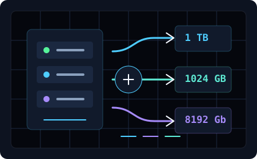

Ferramenta de capacidade
Conversor de Unidades
Converta entre a leitura prática de sistemas operacionais, unidades IEC e métricas SI usadas por fabricantes.

KB / MB / GB / TB
base 2 prática · 1 TB = 1.024 GB
Binário
base 2 · 1 KiB = 1.024 B
Rede — bits
taxa de transferência e largura de banda
Por que isso muda? Em SI oficial, fabricantes anunciam capacidade em base 10 — 1 TB = 1012 bytes. Na leitura prática de sistemas operacionais, TB costuma ser usado como atalho para base 2 — 1 TB = 240 bytes = 1024 GB. As unidades IEC (KiB, MiB, GiB, TiB) continuam sendo os nomes tecnicamente precisos para base 2.